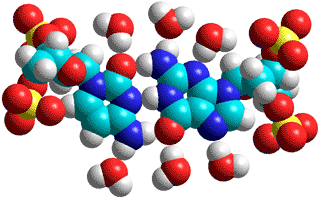

<!DOCTYPE html PUBLIC "-//W3C//DTD XHTML 1.0 Transitional//EN" "http://www.w3.org/TR/xhtml1/DTD/xhtml1-transitional.dtd">
<html xmlns="http://www.w3.org/1999/xhtml">
<head>
<meta http-equiv="Content-Type" content="text/html; charset=iso-8859-1" />
<meta http-equiv="Content-Style-Type" content="text/css" />
<meta http-equiv="Content-Script-Type" content="text/javascript" />
<meta http-equiv="Content-Language" content="en-us" />
<meta name="Description" content="Nucleic acid hydration" />
<meta name="Keywords" content="nucleic acid hydration,DNA hydration,deoxyribose" />
<meta name="author" content="martin chaplin: martin.chaplin@btinternet.com" />

<title>Nucleic acid hydration</title>
<script language="javascript" type="text/javascript" src="head.js"></script>
</head>
<noscript>
Your browser does not support JavaScript!
</noscript>
<head>
<link rel="shortcut icon" href="/water/favicon.ico" type="image/x-icon" />
<link rel="ToC" href="/water/water_structure_science.html" />
<link rel="stylesheet" href="water.css" type="text/css" />

</head>
<body onload="mm_preloadImages('images/seab1.gif','images/seab3.gif','images/seab4.gif','images/top2.gif', 'images/top3.gif')">
<a name="top" id="top"></a>
<div style="width:761px; height:93px; background-color:#006868;padding-top:3px;border:0px;margin:0px;">
  <div style="padding:0px;border:0px;margin:0px;padding-left:3px;width:140px; height:22px; background-color:#006868; float:left; display:inline;">
    <form class="quicklinkform" action=" ">
      <label for="&rdquo;menu1&rdquo;"></label>
      <select class="quicklink"
            onchange="mm_jumpMenu('parent',this,0)" name="menu1" id="&rdquo;menu1&rdquo;">
       <option  value="index.html" selected="selected">Quick links</option>
        <option value="index.html">......................................</option>
        <option value="water_molecule.html">Water molecule</option>
        <option value="water_hydrogen_bonding.html">hydrogen-bonding</option>
        <option value="water_phase_diagram.html">Phase diagram</option>
        <option value="water_vibrational_spectrum.html">Water spectrum</option>
        <option value="water_dissociation.html">Dissociation</option>
        <option value="water_anomalies.html">Anomalies</option>
        <option value="water_properties.html">Water properties</option>
        <option value="index.html">......................................</option>
        <option value="clusters_overview.html">Water clusters</option>
        <option value="protein_hydration.html">Protein hydration</option>
        <option value="hydrocolloids_gums.html">Hydrocolloids</option>
        <option value="ion_hydration.html">Ions</option>
        <option value="index.html">......................................</option>
        <option value="water_structure_science.html">Table of Contents</option>
        <option value="water_sitemap.html">Site map</option>
</select>
</form>
</div>
  <div style="padding:0px;border:0px;margin:0px; height:22px; background-color:#006868; float:left; display:inline;"><a href="search.html" onmouseout="mm_swapImgRestore()" onmouseover="mm_swapImage('search','','images/seab1.gif',1)"></a><a href="water_sitemap.html"></a><a href="/php-cgiwrap/water/pfp.php3?page=http://water.lsbu.ac.uk/water/nucleic_acid_hydration.html" onmouseout="mm_swapImgRestore()" onmouseover="mm_swapImage('printer','','images/seab4.gif',1)"  ></a><a href="add1.html"></a></div>
  <map name="topmap" id="topmap">
    <area shape="poly" coords="322,42,429,42,429,61,322,61" href="martin_chaplin.html" title="Go to my page" alt="Go to my page" onmouseout="mm_swapImgRestore()" onmouseover="mm_swapImage('topi','','images/top3.gif',1)"  />
      <area shape="poly" coords="553,3,554,30,693,30,717,8,747,32,717,56,690,33,204,35,204,3" href="water_structure_science.html" title="Go to Water Structure and Science site contents" alt="Water Structure and Science" onmouseout="mm_swapImgRestore()" onmouseover="mm_swapImage('topi','','images/top2.gif',1)" />
</map>
  <div style="padding:0px;border:0px; margin-left:3px; width:755px; background-color:#006868;"></div>
</div>
<div style="width:761px; background-color:#006868;padding:0px;border:0px;margin:0px;">
  <div style="width:751px; background-image:url('images/bg.gif');margin-left:3px;padding-left:4px;border:0px;padding-top:0px;padding-bottom:0px; background-color:#FFFae2;">
    <!-- print begin -->
   <figure  class="floatright">
<figcaption>
      <p align="center">&nbsp;</p>
      <p align="center">Hydrated cytosine-Guanine base pair from DNA</p>
      <p align="center">&nbsp;</p>
</figcaption> 
</figure>
    <h1>Nucleic 
      Acid Hydration</h1>
    <p>The hydration of the nucleic acids controls their structure and mechanism of action.</p>
    <p>&nbsp;</p>
    <p><span class="style16"> <a href="#basepair" title="go to section below">Hydrogen bonds in the nucleic acids</a><br />
         <a href="#hydr" title="go to section below">DNA hydration</a><br />
       <a href="#proc" title="go to section below">DNA processing</a></span></p>
    <p>&nbsp;</p>
    <p>&nbsp;</p>
<div class="style10">
    <p align="center"><em>'The structure is an open one, and its water content is rather high. </em></p>
    <p align="center"><em>At lower water contents we would expect the bases to tilt so that the structure could become more compact.'</em></p>
</div>
    <div  class="style4">
      <p align="right">James Watson and Francis Crick, 1953 [<a title="go to cited reference"  href="ref9.html#r828">828</a>]&nbsp;&nbsp;&nbsp;</p>
</div>
    <p>&nbsp;</p>
    <p align="left">Pairing between single nucleic acid bases upon hydrogen bond formation in bulk water does not occur (although often shown for simplicity's sake, see below) unless there is a string of hydrogen-bonded bases. Nucleic acid hydration  is crucially important for their conformation and 
      utility  [<a title="go to cited reference" href="ref11.html#r1093">1093</a><a name="r1093" id="r1093"></a>], as noted by Watson and Crick [<a title="go to cited reference" href="ref9.html#r828">828</a><a name="r828" id="r828"></a>]. The organized hydration extends to several nanometers from the surface. The strength of these aqueous interactions is far greater 
      than those for proteins due to their highly ionic character 
      [<a title="go to cited reference" href="ref6.html#r542">542b</a><a name="r542" id="r542"></a>]. The 
      DNA double helix can take up several conformations (for example, right-handed A-DNA pitch 28.2 <a href="constants.html#ang" title="Angstrom">&Aring;</a> 11 <abbr title="base pair">bp</abbr>, 
      B-DNA pitch 34 <a href="constants.html#ang" title="Angstrom">&Aring;</a> 10 <abbr title="base pair">bp</abbr>, 
      C-DNA pitch 31 <a href="constants.html#ang" title="Angstrom">&Aring;</a> 9.33 <abbr title="base pair">bp</abbr>, 
      D-DNA pitch 24.2 <a href="constants.html#ang" title="Angstrom">&Aring;</a> 8 <abbr title="base pair">bp,</abbr> and the left-handed Z-DNA pitch 43<a href="constants.html#ang" title="Angstrom">&Aring;</a> 12 <abbr title="base pair">bp</abbr>)                    with differing hydration. The predominant natural DNA, B-DNA, 
      has a wide and deep major groove and a narrow and deep minor 
      groove and requires the greatest hydration.  
      Lowering the hydration (for example, by adding ethanol) may cause transitions from  B-DNA to A-DNA [<a title="go to cited reference" href="ref28.html#r2784">2784</a><a name="r2784" id="r2784"></a>] to  Z-DNA.<a name="atcg" id="atcg"></a></p>
    <p align="left">&nbsp;</p>
    <p align="center" class="style15">The charged surface of A-T and C-G base pairs</p>
    <p align="center" class="style4">Calculations using the Restricted Hartree-Fock wave function (RHF) using the 6-31G** basis set</p>
    <p align="center"></p>
    <p align="right">[<a title="go to top of page" href="#top"><span class="style16">Back to Top&nbsp;</span></a>] </p>
   <h2><a name="basepair" id="basepair"></a>Hydrogen bonds in the nucleic acids</h2>
     <figure  class="floatright">
<figcaption>
      <p align="center">Hydrogen bonds between the chains of DNA</p>
      <p align="center">&nbsp;</p>
</figcaption>
</figure>
    <p>The double-helical chains of DNA and some RNA strands are held together by hydrogen bonds  (see left). In themselves, the strengths of each of these hydrogen bonds are very similar to each other, and to the hydrogen bond between water molecules, except for the much weaker C-H&middot;&middot;&middot;O=C bonds. Thus the guanine-cytosine base pair, with three medium-strong hydrogen bonds is held with about twice the strength as the adenine-thymine base pair [<a title="go to cited reference" href="ref25.html#r2493">2493</a><a name="r2493" id="r2493"></a>],<sup><a href="#e" name="be" id="be">e</a></sup> which only has two medium-strong hydrogen bonds. All these hydrogen bonds are strengthened and protected from solvent hydration by the hydrophobic stacking of the bases,<sup><a href="#f" name="bf" id="bf">f</a></sup> which is a major contributor to the helix stability. Without such protective stacking, the base pairs would rapidly separate and hydrate with solvent water. When  forming the base pairs, hydrogen bonds to water molecules are broken [<a title="go to cited reference" href="ref35.html#r3454">3454</a><a name="r3454" id="r"></a>].  Each base-pair hydrogen bond costs at least two base-water hydrogen bonds less  the water-water interaction of the released water molecules.    </p>
    <div style=" float:none; clear:both;"></div>
    <p>&nbsp;</p>
    <p>The form of the stacking and the resultant helix conformation is controlled by the external hydration of the helices. </p>
    <p>&nbsp;</p>
    <p>Nuclear magnetic shieldings of the DNA nucleic acids, adenine, cytosine, guanine, and thymine in aqueous solutions have been calculated. The first solvation  shell causes a marked deshielding of the protonated and amino nitrogens and for the hydrogens of the protonated nitrogen   [<a title="go to cited reference" href="ref39.html#r3899">3899</a><a name="r3899" id="r3899"></a>].</p>
    <p align="right">[<a title="go to top of page" href="#top"><span class="style16">Back to Top&nbsp;</span></a>] </p>
    
    <h2><a name="hydr" id="hydr"></a>DNA hydration </h2>
    <p align="left">The change in the free energy of the surrounding water aids the conversion of single-stranded DNA (ssDNA) into double-stranded DNA     (dsDNA) as the water molecules are more stable around dsDNA than  around ssDNA, even out to about 0.65 nm (3 hydration layers) [<a title="go to cited reference" href="ref27.html#r2693">2693</a><a name="r2693" id="r2693"></a>].</p>
    <p>&nbsp;</p>
     <figure  class="floatright">
<figcaption>
      <p align="center">X-ray diffraction patterns for A-DNA and B-DNA, <a href="http://undsci.berkeley.edu/article/0_0_0/dna_06">from</a> </p>
      <p align="center">&nbsp;</p>
</figcaption>
</figure>
   <p> B-DNA (see X-ray diffraction patterns right) needs about 
    30%, by weight, water to maintain its native conformation 
    in the crystalline state. The transformation depends on various factors such as the sequence, ion composition, concentration, and water activity  [<a title="go to cited reference" href="ref30.html#r2912">2912</a><a name="r2912" id="r2912"></a>]. Partial dehydration converts it 
    to A-DNA (see X-ray diffraction patterns right, with a narrower and deeper major groove and very wide 
    but shallow minor groove). The transition for this transformation occurs at about 20 water molecules per base pair, with its midpoint at about 15 water molecules per base pair [<a title="go to cited reference"  href="ref14.html#r1343">1343</a><a name="r1343" id="r1343"></a>] (at about 85% relative <a href="water_vibrational_spectrum.html#l">humidity</a> [<a title="go to cited reference"  href="ref32.html#r3127">3127</a><a name="r3127" id="r3127"></a>]). The B-DNA possesses a spanning water network, and it is the loss of its continuity [<a title="go to cited reference"  href="ref14.html#r1343">1343</a>], together with  the competition between hydration and direct cation coupling to the free oxygen atoms in the phosphate groups [<a title="go to cited reference"  href="ref14.html#r1394">1394</a><a name="r1394" id="r1394"></a>], that give rise to the transition to A-DNA. This dehydration-induced structural transition decreases the free energy required 
    for A-DNA deformation and twisting, which is usefully employed 
    by encouraging supercoiling but eventually leads to denaturation 
    [<a title="go to cited reference"  href="ref5.html#r441">441</a><a name="r441" id="r441"></a>]. Further 
    dehydration results in the least hydrated D-DNA (favored 
    by excess counterions  that shield the DNA phosphate 
    charges), which has a very narrow minor groove with a string 
    of alternating water and counterions distributed along its 
    edge [<a title="go to cited reference"  href="ref9.html#r816">816</a><a name="r816" id="r816"></a>].
    </p>
    <figure  class="floatright">
<figcaption>
      <p align="center">Nucleic acid hydration, using dimethyl </p>
      <p align="center">phosphate, similar to [<a title="go to cited reference"  href="ref4.html#r4393">4393</a><a name="r4393" id="r4393"></a>]</p>
      <p align="center">&nbsp;</p>
</figcaption>
</figure>
   <p>&nbsp;</p>
   <p>There is a significant difference in the hydration of (monomers of) RNA and DNA due to the presence of the 2'-OH groups in RNA. Somewhat surprisingly, their presence reduces the ability and strength of RNAs'  hydrogen-bonding to water and influences the base-pair pattern and conformation  of single nucleoside molecules [<a title="go to cited reference"  href="ref43.html#r4241">4241</a><a name="r4241" id="r4241"></a>]. The reason for this is the formation of  strong intramolecular hydrogen bonds between the 2'-OH and 3'-OH of the ribose residue (2'-O-H&middot;&middot;&middot;&middot;3'-O-H) so reducing their ability to hydrogen bond to  neighboring water molecules.    As found in the loop domains of transfer RNA cloverleaf structures,  short inter-phosphate distances need positively charged ions (e.g., Mg<sup>+2</sup>) and water  molecules to maintain their bioactive folded structure [<a title="go to cited reference"  href="ref4.html#r4393">4393</a>].</p>
   <p>&nbsp;</p>
   <p align="left">Hydration is greater and more strongly held around the phosphate 
      groups that run along the inner edges of the DNA major grooves. 
      However, the water molecules are not permanently situated due to the rather diffuse electron distribution of the phosphate 
      groups. Hydration is more ordered and  persistent around 
      the bases with their more directional hydrogen-bonding ability 
      and restricted space. Water molecules are held relatively 
      strongly with residence times for the first hydration shell 
      0.5 - 1 ns. Because of the regular structure of 
      DNA, hydrating water is held cooperatively along 
      the double helix in both the major and minor grooves. The 
      cooperative nature of this hydration aids both the zipping 
      (annealing) and unzipping (unwinding) of the double helix. 
      Water motion within the grooves is slowed down compared with 
      the bulk water, with the most  significant reduction within the more 
      restricting minor groove [<a title="go to cited reference"  href="ref10.html#r930">930</a><a name="r930" id="r930"></a>]. 
      It has been shown that the conformational fluctuations of the DNA  facilitate these restricted water motions and accelerate the hydration dynamics within the  groove's confinement [<a title="go to cited reference"  href="ref28.html#r2776">2776</a><a name="r2776" id="r2776"></a>]. Molecular dynamics simulations indicate a high correlation of  water's hydrogen bonds within the minor grooves,  suggesting that this is the mechanism for the slow dynamics [<a title="go to cited reference"  href="ref44.html#r4344">4344</a><a name="r4344" id="r4344"></a>]. On melting, about four water molecules per base pair are released 
      despite extra hydration sites being released by the previously 
      hydrogen-bonded base pairing [<a title="go to cited reference"  href="ref8.html#r707">707</a><a name="r707" id="r707"></a>], 
      thus confirming the importance of this cooperative nature 
      of the water-binding within the grooves. Using terahertz time-domain spectroscopy, a higher number of  less well-bound water molecules are found arranged along the sugar-phosphate  backbone beyond the first layer of those firmly bound to phosphate [<a name="r4380" id="r4380"></a><a title="go to cited reference"  href="ref44.html#r4380">4380</a>].</p>
<p>&nbsp;</p>
    <p>Nucleic acids have several groups that can hydrogen bond 
      to water, with RNA having a greater extent of hydration than 
      DNA due to its extra oxygen atoms (that is, ribose O2') 
      and unpaired base sites. These extra hydroxyl groups also 
      create additional hydration in duplex RNA as they provide 
      a scaffold for the minor groove hydration network [<a title="go to cited reference"  href="ref8.html#r708">708</a><a name="r708" id="r708"></a>]. Also, double-stranded RNA forms A-helical structures with shorter intra-strand phosphate-phosphatedistances (4.5 &Aring; rather than 6.6 &Aring; for B-DNA) and higher charge density.</p>
    <p>&nbsp;</p>
     <figure  class="floatright">
<figcaption>
      <p align="center">DNA base pairs showing hydration sites</p>
      <p align="center">&nbsp;</p>
</figcaption>
 </figure>
    <p><a name="hydrat" id="hydrat"></a>In DNA, the bases are hydrogen-bonded 
       pairings, close to the 0.28 nm bond length found between hydrogen-bonded water molecules in liquid water. The aqueous environment causes a slight lengthening (&asymp; 1%) of the DNA hydrogen bonds and weakens them significantly (&asymp; 50%) [<a title="go to cited reference"  href="ref19.html#r1867">1867</a><a name="r1867" id="r1867"></a>].<a name="bd" id="bd"></a><sup><a href="#d">d</a></sup> All these groups, except for the hydrogen-bonded 
       ring nitrogen atoms (pyrimidine N3 and purine N1), are capable 
       of one further hydrogen-bonding link to water within the 
       major or minor grooves in B-DNA. A molecular dynamics simulation indicated that both grooves were equally hydrated with hydration roughly C<sub>N4</sub>/G<sub>N2</sub>/T<sub>O2</sub> &gt; A<sub>N6</sub>/C<sub>O2</sub>/G<sub>O6</sub> &gt; A<sub>N3</sub>/G<sub>N3</sub>/G<sub>N7</sub>/T<sub>O4</sub> &gt;&gt; A<sub>N7</sub> [<a title="go to cited reference"  href="ref13.html#r1249">1249</a><a name="r1249" id="r1249"></a>].
    </p>
    <p>&nbsp;</p>
    <p>Thus, in B-DNA, guanine will hydrogen-bond to a water molecule 
      from the minor groove 2-amino- and major groove 6-keto-groups 
      with further single hydration on the free ring nitrogen atoms (minor 
      groove N3 and major groove N7). Cytosine will hydrogen-bond to a 
      water molecule from both the major groove 4-amino- and minor groove 
      2-keto-groups. Adenine will hydrogen-bond to a water molecule from 
      the major groove 6-amino-group with further single hydration on 
      the free ring nitrogen atoms (minor groove N3 and major groove N7). 
      Thymine (and uracil, if base-paired in RNA) will hydrogen-bond to 
      a water molecule from both the minor groove 2-keto- and major groove 
      4-keto-groups. Phosphate hydration in the major groove is thermodynamically 
      stronger but exchanges faster. There are six (from crystal structures, 
      [<a  href="ref2.html#r143" name="r143" title="go to cited reference" id="r143">143</a>]) or seven (from molecular 
      dynamics, [<a  href="ref2.html#r144" name="r144" title="go to cited reference" id="r144">144</a>]) hydration 
      sites per phosphate<sup><a href="#a" name="ba" id="ba"> a</a></sup>, not 
      including hydration of the linking oxygen atoms to the deoxyribose 
      or ribose residues. The deoxyribose oxygen atoms (O3' phosphodiester, 
      ring O4' and O5' phosphodiester) all hydrogen-bond to one water molecule, 
      whereas the free 2'-OH in ribose is much more capable of hydration 
      and may hold on to about 2.5 water molecules.<sup><a href="#b" name="bb" id="bb"> b</a></sup> The total for all these hydrations, in a GC 
      duplex, would be about 26-27, but about 14 of these water molecules 
      are shared. There are many ways  these water molecules 
      can be arranged, with B-DNA possessing 22 possible primary hydration 
      sites per base pair in a GC 
      duplex but only occupying 19 of them [<a title="go to cited reference"  href="ref2.html#r144">144</a>]. 
      The DNA structure depends on how these sites are occupied; water 
      providing the zip, holding the two strands together.&nbsp;It should 
      be noted that cations may 
      transiently replace about 2% of the hydrating water molecule sites.</p>  
<figure  class="floatright">
<figcaption>
    <p>&nbsp;    </p>
    <p align="center">Hydration of the minor groove of &Beta;-DNA, <a href="http://ndbserver.rutgers.edu/atlas/xray/structures/B/bd0008/bd0008.html">from</a></p>
</figcaption>
</figure>
    <p>&nbsp;</p>
    <p><a name="dnah2o" id="dnah2o"></a>The hydration of the B-DNA minor groove is dependent on the DNA sequence with water-bridge lifetimes varying from 1 to 300 ps [<a title="go to cited reference"  href="ref18.html#r1767">1767</a><a name="r1767" id="r1767"></a>], depending on the sequence. The hydration usually involves single water molecules connecting the strands. However, connection via pairs of water molecules, with varying interchange between these forms, may allow greater structural flexibility in the DNA and interactions with specific proteins [<a title="go to cited reference"  href="ref17.html#r1605">1605</a><a name="r1605" id="r1605"></a>]. There is a spine of hydration running down the bottom 
      of the B-DNA minor groove, particularly where there is the 
      A<abbr title="2 H-bonds">=</abbr>T duplex [<a  href="ref2.html#r145" name="r145" title="go to cited reference" id="r145">145</a>] (see right, where the water oxygen atoms are shown large green and red, where the red atoms are  the primary hydration water and the green atoms  are  the secondary hydration water,   [<a title="go to cited reference"  href="ref12.html#r1136">1136</a><a name="r1136" id="r1136"></a>]), which is vital in stabilizing 
      it [<a  href="ref2.html#r146" name="r146" title="go to cited reference" id="r146">146</a>]. Thus, A<abbr title="2 H-bonds">=</abbr>T duplex sequences favor water binding in the minor groove, and protein binding driven by the significant entropy release on this low entropy water's release  [<a title="go to cited reference"  href="ref12.html#r1136">1136</a>]. Water molecules hydrogen-bond by donating 
      two hydrogen bonds, so bridging between thymine 2-keto(s) 
      and adenine ring N3(s) in sequential opposite strands 
      (that is, not paired bases). This water has been called cross-strand bridging water (CSBW) and appears to be necessary for charge transfer (hole transport) between separated guanine bases down the DNA duplex [<a title="go to cited reference"  href="ref13.html#r1221">1221</a><a name="r1221" id="r1221"></a>]). <abbr title="cross-strand bridging water">CSBW</abbr> water is fully hydrogen-bonded by accepting two further hydrogen bonds from secondary 
      hydration water, so fixing the primary hydration water more 
      firmly in place such that they exchange slower (0.9 ns) than 
      any other water hydrating the DNA. The primary hydration may 
      occur regularly down the minor groove connecting the strands and is <a href="astrobiology.html#d">chiral </a>even in the liquid state [<a title="go to cited reference"  href="ref30.html#r2916">2916</a><a name="r2916" id="r2916"></a>]. Such water molecules shield the double helix and protect it from excess heat and  UV photo damage [<a title="go to cited reference"  href="ref30.html#r2916">2916</a>]. </p>
    <p>&nbsp;</p>
    <p>Transcription factor binding to the minor groove is accompanied by  
      loss of this water [<a title="go to cited reference"  href="ref30.html#r2921">2921</a><a name="r2921" id="r2921"></a>]. A further cooperative effect is through the secondary hydration. 
      The minor groove  has a complex hydration pattern, including 
      water hexagons from the initial spine of hydration (above) 
      through secondary hydration out to the 4th aqueous shell [<a title="go to cited reference"  href="ref8.html#r797">797</a><a name="r797" id="r797"></a>]. 
      This hydration is more strongly held than in the GC 
      duplex giving rise to greater apparent hydration (about 44 
      water molecules per A=T duplex base pair [<a  href="ref2.html#r179" name="r179" title="go to cited reference" id="r179">179</a>]). 
      The 
      A<abbr title="2 H-bonds">=</abbr>T base-pairing produces the narrower minor groove and more 
      pronounced spine of hydration. In contrast, the GC 
      base pairing produces a wider minor groove with more extensive 
      primary hydration, partly due to the 50% greater <a title="click for an explanation" href="#hydrat">hydration 
      sites</a>. </p>
    <p>&nbsp;</p>
    <p>Such solvent interactions are key to the hydration 
      environment, and hence its recognition [<a title="go to cited reference"  href="ref16.html#r1565">1565</a><a name="r1565" id="r1565"></a>], around the nucleic 
      acids and directly contributes to the DNA conformation. They act together with the positively charged counterions, to give a complex sequence-dependent electrostatic environment and capable of specifically interacting with   biologically important ligands [<a  href="ref34.html#r3400" name="r3400" title="go to cited reference" id="r3400">3400</a>]. </p>
    <p>&nbsp;</p>
    <p> B-DNA 
      possessing higher phosphate hydration, less exposed sugar 
      residues, and a smaller hydrophobic surface, is stabilized at 
      high <a href="water_activity.html">water activity,</a> whereas A-DNA, 
      with its shared inter-phosphate water bridges, is more stable 
      at low <a href="water_activity.html">water activity</a>.&nbsp;Thus, 
      if the relative humidity is kept constant, there will  be a transformation from B-DNA to A-DNA with increasing 
      temperature [<a title="go to cited reference"  href="ref2.html#r179">179</a>]. The much greater 
      loss in primary hydration of GC 
      base pairs (compared with A<abbr title="2 H-bonds">=</abbr>T base pairs) on changing from 
      B-DNA to A-DNA is apparently responsible for the tendency of 
      GC base pairs rather 
      than A<abbr title="2 H-bonds">=</abbr>T base pairs to form the A-DNA conformation. In contrast 
      to B-DNA, A-DNA possesses a hollow core down its axis where 
      water can create a hydrogen-bonded structure linking to the 
      bases from the side of the major groove (as <a title="click for an explanation" href="#hydrat">shown 
      above</a>) [<a title="go to cited reference"  href="ref6.html#r553">553</a><a name="r553" id="r553"></a>]. 
      Any disruption of this core structure may lead to 
      the A-DNA B-DNA transition. </p>
    <p>&nbsp;</p>
    <p>Using cryo neutron crystallography, the H-bonding patterns of water molecules around the left-handed Z-DNA duplex<br />
    [d(CGCGCG)]<sub>2</sub> has been investigated at 1.5 <a href="constants.html#ang" title="Angstrom">&Aring;</a> resolution[<a  href="ref43.html#r4271" name="r4271" title="go to cited reference" id="r4271">4271</a>].  Although the bases form standard Watson-Crick pairs in Z-DNA, the cytosine and guanosine residues adopt different <a href="furan_pseudorotation.html">sugar puckers</a> (C2'-<em>endo</em> and C3'-<em>endo</em>, respectively). This study showed that water is shared among guanine and cytosine keto and amino groups in the minor groove and on the convex surface.</p>
    <p>&nbsp;</p>
    <p align="right">[<a title="go to top of page" href="#top"><span class="style16">Back to Top&nbsp;</span></a>] </p>
    <h2><a name="proc" id="proc"></a>DNA processing </h2>
    <p>The processing of the genetic information within DNA is facilitated 
      by highly discriminatory and strong protein binding. It has 
      been shown that the interfacial water molecules can serve 
      as 'hydration fingerprints' of a given DNA sequence [<a title="go to cited reference"  href="ref9.html#r889">889</a><a name="r889" id="r889"></a>]. The usual 'hydration fingerprint' of the DNA  is disrupted by DNA damage,  facilitateing repair protein attachment. The hydration spine (see <a href="#dnah2o">above</a>) is capable of carrying messages, as facilitated proton movement down the water wire, between binding sites in a similar, if complementary, manner to the electron transfer through the DNA residues [<a title="go to cited reference"  href="ref23.html#r2258">2258</a><a name="r2258" id="r2258"></a>] and so coordinate the repair process.</p>
    <p>&nbsp;</p>
    <p>The primary driving force for the specificity of protein binding is the entropy 
      increase due to the release of bound water molecules (estimated at 3.6 kJ  &#739; mol<sup>&minus;1</sup> for minor groove water and 2.3 kJ  &#739; mol<sup>&minus;1</sup> for major groove water, both at 300 K [<a title="go to cited reference"  href="ref11.html#r1096">1096</a><a name="r1096" id="r1096"></a>]),<sup><a href="#c" name="bc" id="bc">c</a></sup> with 
      the DNA sequence determining the hydration pattern in the 
      major and minor grooves (see <a title="click for an explanation" href="#hydrat">above</a>). 
      Less perfect (that is, weaker) binding involves mainly 
      secondary hydration water loss. It  would allow sliding 
      of the protein along the DNA [<a title="go to cited reference"  href="ref12.html#r1176">1176</a><a name="r1176" id="r1176"></a>], facilitated by the remaining 
      primary hydration water molecules [<a title="go to cited reference"  href="ref9.html#r889">889</a>]. For example, about 110 water molecules are released on binding  the restriction endonuclease <em>Eco</em>RI to its site GAATTC, leaving an essentially dry  interface and firmly bound complex with binding constant &asymp; 10,000 times that for nonspecific binding. However, changing just one base out of the recognition sequence leaves those water molecules mostly unaffected and only little different from <em>Eco</em>RI non-specifically binding to DNA [<a title="go to cited reference"  href="ref12.html#r1176">1176b</a>]. Thus, the key to  forming  specific links between proteins and DNA is that the  interfacial water molecules allow the protein facile movement along the binding cleft while retaining contact information  [<a title="go to cited reference"  href="ref15.html#r1443">1443</a><a name="r1443" id="r1443"></a>].   Final binding makes use of both direct and water-mediated hydrogen bonds; for example, the restriction endonuclease MspI makes specific  connections with all eight bases in the four base pair recognition sequence (5'-CCGG-3' and complementary 3'-GGCC-5'),  by six direct and five water-mediated hydrogen bonds and thirteen  water-mediated links to the phosphates [<a title="go to cited reference"  href="ref15.html#r1444">1444</a><a name="r1444" id="r1444"></a>].</p>
    <p>&nbsp;</p>
     <figure  class="floatright">
<figcaption>
      <p align="center">Water screening the charges between DNA and protein</p>
      <p align="center">&nbsp;</p>
</figcaption>
</figure>
    <p>Protein sliding along the DNA is assisted by uniform complementary electrostatic interactions between the positive protein and negative DNA as moderated by the intervening water, whereby the protein follows the helical pathway of the groove rather than jumping between the major groove and the more negative minor groove [<a title="go to cited reference"  href="ref12.html#r1176">1176c</a>]. Where negative charges exist on the protein that create unfavorable binding electrostatics,  similar charges may be screened, as shown right. It is essential that a balance of positive and negative charges exist to ensure that the binding is generally not too strong,  avoiding excessive binding friction except where required.</p>
    <p>&nbsp;</p>
    <p>The organization of the hydration close to the DNA results in weaker hydrogen bonding further out at 5&ndash;15 <a href="constants.html#ang" title="Angstrom">&Aring;</a> that allows unusually rapid movement of these water molecules. The ease of displacement of this translationally mobile water by approaching proteins or ligands will be energetically favored and reduce the activation barrier for DNA surface. interactions [<a title="go to cited reference"  href="ref25.html#r2448">2448</a><a name="r2448" id="r2448"></a>],</p>
    <p>&nbsp;</p>
    <p>It has been (independently) proposed that the separation of DNA double helices is enabled by  forming clathrate-like water structuring using its screening dipoles [<a title="go to cited reference"  href="ref13.html#r1222">1222</a><a name="r1222" id="r1222"></a>], an idea that ties this basic life process to  the <abbr title="Expanded icosahedral water cluster structure"><a title="go to 'Water clusters' page"  href="icosahedral_water_clusters.html#ES">ES</a></abbr><a title="go to 'Water clusters' page"  href="icosahedral_water_clusters.html#Fig2"></a><abbr title="Collapsed icosahedral water cluster structure"><a title="go to 'Water clusters' page"  href="icosahedral_water_clusters.html#CS">CS</a></abbr><a title="go to 'Water clusters' page"  href="icosahedral_water_clusters.html#Fig2"> equilibrium</a> and its icosahedral water clusters.</p>
    <p>&nbsp;</p>
    <p>Highly structured water molecules, with lengthy residence times, have been found to be essential for the structural dynamics and function of ribozymes [<a title="go to cited reference"  href="ref12.html#r1106">1106</a><a name="r1106" id="r1106"></a>] (catalytically competent highly structured non-coding RNAs) where water analogously communicates structural rearrangements to its action around many <a title="go for more information" href="protein_hydration.html">proteins</a>. </p>
    <p align="right">[<a title="go to top of page" href="#top"><span class="style16">Back to Top&nbsp;</span></a></p>
    <hr />
    <h2>Footnotes</h2>
    <p><sup><a name="a" id="a"> a</a></sup>&nbsp;&nbsp;&nbsp; Both methods have drawbacks. X-ray 
      crystallography gives better resolution at  lower hydration, but the 
      lower hydration will change the structure. Another disadvantage 
      is its inability to define the orientation of water molecules. The 
      results of molecular dynamics calculations are highly dependent 
      on the methodology and force field used. [<a title="click for an explanation" href="#ba"><span title="go back to the text">Back</span></a>]</p>
    <p>&nbsp;</p>
    <p><sup><a name="b" id="b"> b</a></sup>&nbsp;&nbsp;&nbsp; The ribose residue 
      is a furan possessing a flexible (five-membered) ring with low energy 
      barriers between several conformations. This encourages localized 
      weak hydrogen-bonding around its free 2'-hydroxyl group (for more 
      detail, see the <a href="polysaccharide_hydration.html#furan">polysaccharide 
      hydration</a> section). [<a title="click for an explanation" href="#bb"><span title="go back to the text">Back</span></a>] </p>
    <p>&nbsp;</p>
    <p><sup><a name="c" id="c"> c</a></sup>&nbsp;&nbsp;&nbsp; The entropy 3.6 kJ  &#739; mol<sup>&minus;1</sup> for minor groove water  may be compared with that of ice (6.0 kJ  &#739; mol<sup>&minus;; </sup>0&nbsp;&deg;C), indicating that the minor groove water tends towards being  ice-like. [<a title="click for an explanation" href="#bc"><span title="go back to the text">Back</span></a>] </p>
    <p>&nbsp;</p>
    <p><sup><a name="d" id="d"> d</a></sup>&nbsp;&nbsp;&nbsp; Raman spectroscopy has shown that the hydrogen bonds  in the primary (inner) hydration shell are very strongly bound to the DNA and appear to be about 0.3&#8239;<a href="constants.html#ang" title="Angstrom">&Aring;</a> shorter than the hydrogen bonds in bulk water  [<a title="go to cited reference"  href="ref25.html#r2487">2487</a><a name="r2487" id="r2487"></a>]. [<a title="click for an explanation" href="#bd"><span title="go back to the text">Back</span></a>] </p>
    <p>&nbsp;</p>
    <p><sup><a name="e" id="e"> e</a></sup>&nbsp;&nbsp;&nbsp; The commonly-found assumption that the two A=C hydrogen bonds and the three C<span class="style2">&ordm;</span>G hydrogen bonds are all approximately equal has been challenged with the two base pairs being given about equal bonding strength [<a title="go to cited reference"  href="ref35.html#r3468">3468</a><a name="r3468" id="r3468"></a>]. [<a title="click for an explanation" href="#be"><span title="go back to the text">Back</span></a>] </p>
    <p>&nbsp;</p>
    <p><sup><a name="f" id="f"> f</a></sup>&nbsp;&nbsp;&nbsp;  In the  &pi;-stacking of aromatic compounds, such as the formation of benzene dimers, there is an  entropic stabilization associated with the shrinkage of the solvent-excluded volume  as the two surfaces come together with the elimination of the H<sub>2</sub>O-&Pi;-benzene  hydrogen bonds from each surface. This entropic stabilization is nearly canceled  out due to the enthalpic cost required for dewetting the internal space. Such  an enthalpy-entropy compensation leads the association-free energy to be  predominantly dictated by the solute-solute interaction enthalpy. [<a title="go to cited reference"  href="ref36.html#r3511">3511</a><a name="r3511" id="r3511"></a>]. [<a title="click for an explanation" href="#bf"><span title="go back to the text">Back</span></a>] </p>
    <!-- print end -->
    <div class="spacer">
      <p>&nbsp;</p>
</div>
</div>
</div>
<div style="width:761px; background-color:#006868;padding-top:0px;padding-bottom:3px;border:0px;margin:0px;">
  <div style="width:753px; background-image:url('images/bg2.gif');margin-left:3px;padding-left:2px;border:0px;padding-top:0px;padding-bottom:0px;background-color:#D8F0d8;">
    <p>&nbsp;</p>
    <p align="center"><span class="style3"><a title="Home page" href="index.html">Home</a> | <a title="go to our 'Site index'" href="water_structure_science.html" accesskey="I">Site Index</a> | <a title="go to more on polysaccharide hydration" href="polysaccharide_hydration.html">Polysaccharide 
      hydration</a> | <a href="protein_hydration.html" title="more on protein hydration" >Protein hydration</a> | <a href="furan_pseudorotation.html">Ribose structure</a> | <a href="http://www.lsbu.ac.uk/" ><abbr title="London South Bank University">LSBU</abbr></a> | <a title="go to top of page" href="#top">Top</a></span></p>
    <p>&nbsp;</p>
    <p align="center"><span class="style3">This page was established in 2001 and  last updated 
        by <a title="email me" href="mailto:martin.chaplin@btinternet.com?subject=from_water_web_site">Martin Chaplin</a> on
        <!-- #BeginDate format:Sw1 -->2 January, 2022<!-- #EndDate -->
</span></p>
    <br />
    <div class="floatleft" style="width:320px;">
      <div align="right"><a rel="license" href="https://creativecommons.org/licenses/by-nc-nd/2.0/uk/"></a></div>
</div>
   <span class="style4">This work is licensed under a <a rel="license" href="https://creativecommons.org/licenses/by-nc-nd/2.0/uk/">Creative Commons Attribution<br />
    -Noncommercial-No Derivative Works 2.0 UK: England &amp; Wales License</a></span>
    <p>&nbsp;</p>

    <div class="spacer"></div>
</div>
</div>
</body>
</html>
